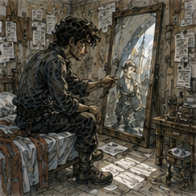
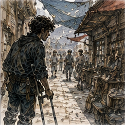
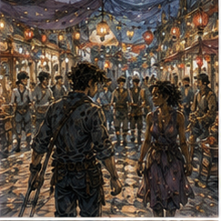
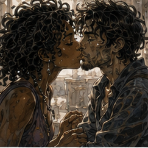

I had one day to prepare for a date. This was too much time. If Lyssa had said, Come now, I would have gone. Crutches. Blue shirt. Hair doing whatever it wanted. Done. Instead I had a full day in which to become stupid.

I discovered this after breakfast when I found myself standing in front of the little mirror downstairs and turning my head left, then right, as if a different angle might improve the beard. It did not.
The beard had reached a length where it was no longer technically stubble and had therefore acquired responsibility. I had trimmed it myself three days ago. This had been a mistake. Not a large mistake. No bleeding. No missing patch. Just enough unevenness that I could see it every time I looked directly at my own face.
The keeper came through carrying a bucket. She stopped. I stopped looking at myself. She looked at the mirror, then at me.
“No.”
“I said nothing.”
“You were thinking loudly.”
“That is not possible.”
“It is when you stare at your beard like it owes you money.”
I touched the left side. She sighed.
“Go pay somebody.”
“I can fix it.”
“You already did.”
Rude. Correct. I checked the dressing before deciding anything. Dry. No heat I could detect. No spreading redness. Swelling low after sleep. Right shoulder mildly stiff. Hands tender but intact. A haircut was medically unnecessary.
Good.
I went.
*
The barber was three streets farther than I remembered. Or the street was longer on crutches. Probably that. I could have hired a cart for three streets. I did not. This was not courage. The weather was cool, the paving mostly even, and I wanted to move.
So I moved. Slowly. Carrow had discovered several new ways to be in my way since I acquired crutches. Handcarts stopped at corners. Dogs slept exactly where a crutch tip wanted to land. People walking three abreast developed a profound philosophical commitment to remaining three abreast until the last possible moment.
Most moved. One man did not see me until he nearly clipped my right crutch with a basket. He apologized. I said fine. It was fine. Nothing happened. Useful category. The barber had one chair with arms and one without. I chose without because the arms interfered with crutches, then realized I had to get back out of it afterward.
Fine. He tucked cloth around my neck and asked, “Short?”
“Less stupid.”
He looked at my beard in the mirror.
“Hair or beard?”
“Yes.”
That earned a grunt.
Good.
I had spent years letting healers cut into me, artificers attach things to equipment I was wearing, armorers adjust straps while I stood inside metal, and one memorable field surgeon remove part of an arrow while explaining that the rest was staying until morning.
Apparently scissors behind my ear were where trust became difficult. I watched his hands in the mirror. He noticed.
“Hold still.”
“I am.”
“Your eyes aren't.”
“My eyes are not attached to the hair.”
“Lucky hair.”
I liked him immediately and therefore did not ask his name. This was progress in one very narrow field.
He trimmed the sides, took enough weight off the top that my hair stopped trying to become weather, and fixed the beard without making it look intentional. This was important. I did not want to look like a man who had spent an hour preparing to look like he had not prepared.
I had spent perhaps twenty minutes. Different. When he finished, I looked nineteen. That remained alarming sometimes. Not because I forgot. Because the face had stopped being the most impossible part of my life months ago. Then I would catch it unexpectedly and remember that the man doing calculations behind those eyes had once complained about waking with a bad back.
The young face looked pleased with the haircut. So did I.
“Good,” I said.
The barber held out his hand. Right. Money. Ordinary systems remained undefeated. I paid him.
*
On the way back, Sevren nearly walked past me. He had a courier bag across his chest, mud dried to both boots, and the expression of a man who had slept somewhere that charged money for the privilege of regretting it.
Then he stopped.
“Greg?”
“No.”
He looked at my hair.
“Oh.”
“Fuck you.”
“That is dramatically better.”
“I regret recognizing you.”
He grinned and shifted the courier bag higher. Sevren had been gone long enough that I had not noticed he was gone until he was standing in front of me again. This was either a failure of friendship or evidence that he had his own life.
I chose the second one.
“Route?” I asked.
“North road, then west. Two contracts, one box nobody would tell me was glass until after I put it under a sack of buckles.”
“Was it glass?”
“Yes.”
“Did it survive?”
“Yes.”
“Then excellent packing.”
“Accidental excellent packing.”
“Still excellent.”
He looked at me again.
“Why do you look respectable?”
“I always look respectable.”
“No.”
“Date.”
The word came out before I considered whether I wanted to say it. Fine. Sevren's grin changed.
“With Lyssa?”
“Yes.”
“Good.”
That was all. No interrogation. I found this suspicious.
“You're not going to ask anything?”
“I was gone three days. I have six deliveries left, Octavia says I smell like horse, and the west road inn charged me for a blanket with a hole large enough to qualify as architecture.”
“Where was the hole?”
“In the blanket.”
“I mean position.”
He stared at me.
“No.”
Fair. He stepped around me, then stopped again.
“Night market?”
“Yes.”
“Crowded.”
“I know.”
“I know you know.”
He pointed at my crutches.
“West entrance is flatter.”
“I know.”
“Good.”
He left. I watched him go for perhaps three seconds. Then four.
His route bag bounced against his hip. Mud from roads I had not seen in this life flaked off his boots onto Carrow paving. In three days he had left the city, slept badly somewhere else, carried other people's contracts through places that did not know I existed, and returned because there were six more deliveries.
The world had always done that. I had simply been busy. Then my right hand started aching around the crutch grip. The world could continue without requiring symbolism. I went home.
*
I did nothing professionally useful for the rest of the morning. This was harder than expected. A Guild runner did not come. Vale did not send work. Edrin did not send anything.
Holl did not send anything. Arlo and Vessa continued the apparently difficult discipline of not requesting my presence. I considered going upstairs. No. One stair trip would cost something. I had what I needed downstairs. Blue shirt. Better trousers. Water. Food. Crutches. Pride.
Mostly. The keeper found me at the table with my notebook open. She looked at the blank page.
“What are you working on?”
“Nothing.”
“You wrote a heading.”
I looked down.
NIGHT MARKET.
Below it I had written:
TRANSPORT.
SEATING.
FOOD.
CROWD.
RETURN.
Fuck.
I closed the notebook. The keeper laughed so hard she had to put down the bowl she was carrying.
“This is logistics.”
“For romance?”
“No.”
“What is it for?”
“Not falling over.”
“Very romantic.”
“I hate this building.”
“You pay on time.”
Terrible woman. I opened the notebook after she left. Then I crossed out the whole list.
Not because the questions were wrong. They were good questions. Transport mattered. Seating mattered. Crowd density mattered. I knew the west entrance was flatter. I knew I would probably hire a cart home. I knew both crutches needed planting before somebody kissed me while standing, which remained among the stranger medical instructions I had received.
Enough.
I did not need to determine the optimal sequence of food stalls. I wrote one line instead.
WEST ENTRANCE. CART HOME IF NEEDED.
Then I closed the notebook. That lasted eleven minutes. I opened it again to check the time. There was no time written. Excellent.
I took a nap.
*
I woke hungry.
Nineteen.
Good.
The wound was still quiet. Some swelling from the morning walk. Not much. Hands better after rest. Shoulder better. I changed into the blue shirt. The shirt was no longer new. This bothered me for half a second.
Then I realized that was better. It was clothing now. I ate bread before leaving because arriving at a market hungry enough to make financial decisions based on smell seemed unwise. Then I arrived at the market and immediately made financial decisions based on smell.
Of course.
*

The west entrance was flatter. Sevren had been correct about something I already knew, which gave him no credit. The night market had swallowed three streets and part of the riverside square. Lanterns hung from ropes between buildings. Oil lamps burned under awnings. Steam rose from pots. Smoke drifted low enough that every third breath tasted like somebody else's dinner.
Carrow smelled like hot fat, river water, wet stone, onions, horse, spice, cheap perfume, and people who had worked all day and decided they deserved something afterward. Good smell. Crowd moved around carts and stalls in uneven channels. My route through it was slower than everyone else's and therefore more interesting to everyone else than I wanted.
Not much. A few glances. Most people had food. Food won. I had hired a cart to the entrance because I wanted my shoulders later. The driver left. I stood with both crutches planted and tried not to look like I was waiting too early.

I was early. Seven minutes. Possibly nine. I refused to check. Then Lyssa came through the crowd carrying a little folded cloth bag at her hip.
Gray trousers. Dark shirt. Hair tied back badly enough that several strands had escaped before she reached me. She saw me. Stopped. Looked at my head.
“No.”
I stared.
“You too?”
She laughed.
“You got your hair cut.”
“Yes.”
“For the date?”
“No.”
“Greg.”
“Yes.”
Her smile changed just enough to make the barber worth whatever I had paid him. Good investment. No. Not investment. Haircut.
“Looks good,” she said.
“Thank you.”
I had prepared several possible responses to that exact event without admitting I had prepared them. Thank you was not one of them. It worked. Interesting. Lyssa looked past me into the market.
“Food?”
“Yes.”
That worked too. We went.
*
The first stall sold skewers of meat glazed with something sweet and hot enough to make my nose run. I bought two. Lyssa bought fried dough from the next stall and tore one piece in half without asking whether I wanted it.
I took it. We did not discuss payment strategy. Excellent. Walking with food remained mechanically stupid because both my hands were occupied by crutches. I stood beside the stall and ate.
Lyssa ate beside me. No problem. Then we moved again.
The market was not designed for me. It was not designed against me either. It had benches in some places because people liked sitting. Low walls existed because walls existed. Stall owners left gaps because goods had to move. A woman carrying a tray needed the same clear path I did, except she could turn sideways more easily.
I started noticing routes. Then stopped myself. Not because routes were bad. Because Lyssa was telling me about a customer who had asked Rima to make sleeves tighter, then complained that the sleeves were tighter.
“Could be measurement error,” I said.
“No.”
“Fabric stretch?”
“No.”
“Different shirt underneath?”
“No.”
“You sound very certain.”
“She said, ‘I wanted them tighter, not tight.’”
I considered this.
“That is a real distinction.”
Lyssa stopped walking.
“Do not defend her.”
“I am not defending her. I am saying language has failed both parties.”
“Rima's language did not fail.”
“What did she say?”
“Take it off.”
I laughed hard enough that my left hip tried to shift into a stance requiring a foot that did not exist. The movement was small. Familiar now. I planted both crutches harder and waited. Nothing hurt. Lyssa saw the correction.
She did not ask if I was all right.
Good.
She said, “Still funny.”
“Yes.”
We kept going.
*
A man with three cups and a painted pebble was taking money from people. Not stealing. Probably. The cups moved quickly over a low board while he talked constantly. The game was simple. Pebble under cup. Cups moved. Pick cup. Win twice what you put down.
Simple games are dangerous because people confuse simple rules with simple systems. I stopped. Lyssa kept walking three steps before noticing.
“No.”
“What?”
“No.”
“I haven't done anything.”
“You have the face.”
“What face?”
“The one you make when you're about to spend ten minutes proving you understand something nobody asked you to understand.”
“That is not a face.”
“It is absolutely a face.”
The cup man called, “One copper finds the stone.” I looked at Lyssa. She looked at me.
“One,” I said.
“You're going to lose.”
“Probably not.”
“Good.”
That was the wrong response. I paid. The pebble started under the center cup. His hands were good. Not magical. Not impossibly fast. Practiced.
He spoke while moving.
“Center begins honest. Left likes trouble. Right has a wife and three children and cannot afford trouble.”
People laughed. I tracked center to right, right to center, center to left. Left. He stopped. I pointed left.
He lifted it. Empty. The crowd made the delighted noise people make when somebody else loses a small amount of money. I frowned. He lifted center.
Pebble. Interesting.
“Again?” he asked.
“Yes,” I said.
Lyssa made a sound.
“One,” I told her.
“That was one.”
“One more.”
“You said one.”
“I have updated.”
“Of course you have.”
I paid again. This time I watched his wrists instead of cups. Wrong. Not wrong exactly. Incomplete. His hands moved. His voice moved the crowd. A woman beside me laughed and leaned into my line of sight for half a second. The cup man had created that laugh deliberately.
I realized this immediately after the pebble was somewhere else. I chose right. Empty. Lyssa laughed. The cup man bowed to me.
“Very generous.”
“Again?” he asked.
“No,” I said.
He looked almost disappointed. Good professional. We moved away. Lyssa said, “You lost two copper to cups.”
“Yes.”
“You look happy.”
“I learned something.”
“There it is.”
“No.”
I looked back. The cup man already had another group. Same cups. Same pebble. Different jokes. I had tracked the object. He had been tracking people. That was useful.
I nearly said it. Then I decided I did not need to turn two lost copper into tuition.
“I enjoyed it,” I said instead.
Lyssa looked at me. Then smiled.
“That's worse.”
“Why?”
“Now you'll do it again.”
Possibly.
*
We sat after that. Not because I had reached a limit. Because I was getting close enough to one that sitting was smarter. There was a low stone edge around a dry planter near the square. We found space between two old women sharing roasted nuts and a boy asleep against his father's side.
I put the crutches against my right knee where I could control them and stretched the right leg carefully. Residual limb throbbed once. Then again. Expected. Lyssa handed me the rest of the fried dough.
“You bought this.”
“I know.”
“You're giving it away.”
“I know.”
“Economically dangerous.”
She kicked my intact boot lightly. I ate the dough. Across the square, two musicians were arguing while tuning. One had a bowed instrument. The other kept tightening a drumhead and testing it with one finger. Neither cared about us.
Good.
A pair of Guild workers in ordinary clothes crossed the square carrying beer. A merchant I had seen once at South Canal stood in line for something fried. Three children chased each other around a post until an adult caught one by the collar. Somebody behind us was explaining, incorrectly and with great confidence, how river tolls were calculated.
I almost turned around. No. Date. Lyssa followed my eyes anyway.
“You know them?”
“No.”
“Then stop listening.”
“They're wrong.”
“They'll survive.”
“Maybe.”
She laughed. The musicians stopped arguing and started playing. They were good. Not extraordinary. Good enough that the square changed shape around them. People did not stop entirely. They slowed. Conversations angled. A few children came closer. One vendor started clapping with the beat while still serving food.
I watched the crowd more than the musicians for perhaps half a song. Then Lyssa leaned her shoulder against mine. I stopped doing that too. We listened. This was not difficult.
Which was suspicious. After a while Lyssa said, “What did you do today?”
“Haircut.”
“I noticed.”
“Walked.”
“Heroic.”
“Napped.”
She turned her head.
“Nothing else?”
“No work.”
“No Guild?”
“No.”
“Vale?”
“No.”
“Magic?”
“No.”
That answer landed differently. Not badly. Just heavier. Lyssa knew enough not to ask why. I had told her Hessa had not cleared me. Or perhaps she had heard it through ordinary Carrow channels, which meant everybody knew everything except the parts they invented.
She said, “Did you hate it?”
“The nap?”
“The nothing.”
I considered lying. Not because the truth was dangerous. Habit.
“A little,” I said.
She nodded. Then the drum changed rhythm and the conversation ended because it did.
Good.
*
Later, Lyssa asked, “What next?” The market still had at least twenty directions. Food stalls. Cheap jewelry. Carved toys. Old books. A man selling knives too expensive for the table they were on. A woman demonstrating a folding lantern. Musicians. Dice. River fish. Sweet things. People.
I started sorting. Food again? We had eaten. Walking cost. Crowd increased toward center. Could sit through music longer.
Could find quieter edge. Could ask Lyssa what she wanted, which was sensible because she had asked me. No. She had asked me. I looked around once.
A stall near the far edge had small clay animals lined up in rows. Bad animals. Deliberately bad or incompetently bad, unclear. One horse had six legs. A duck looked threatening. A dog had no neck.
“That,” I said.
Lyssa followed my finger.
“The ugly animals?”
“Yes.”
“Why?”
“I want to know what happened to the horse.”
She grinned. We went. The answer was nothing. The horse simply had six legs. I bought it.
One copper. Lyssa stared.
“What are you going to do with that?”
“I don't know.”
“You bought it.”
“Yes.”
“Why?”
“I like it.”
She looked at the horse.
“You like that?”
“It has too many legs.”
“That is the opposite of your current problem.”
I looked at her. She froze. Then I laughed. She covered her face.
“Oh, fuck.”
“That was terrible.”
“I know.”
“No, genuinely excellent.”
“Greg.”
“Six legs.”
“Stop.”
I laughed harder. This time I was already sitting on the edge of the stall platform because the vendor had provided a stool for customers examining the lower shelf. Excellent infrastructure. Lyssa was red in the face.
“I didn't mean it.”
“I know.”
“Are you sure?”
“Yes.”
“Fuck.”
“Yes.”
She started laughing too. The vendor watched us with the expression of somebody who had sold a bad clay horse and wanted no further involvement. Reasonable. I tucked the horse into Lyssa's cloth bag because I could not carry it while using two crutches.
She looked at me.
“You bought a thing and now I carry it.”
“Temporary logistics.”
“Ah.”
“I will take it back when we sit.”
“You're very independent.”
“Fuck you.”
She smiled.
Good.
*
We stayed longer than I had planned. This was because I had stopped planning. Mostly. We ate something sweet that stuck to my teeth. Lyssa won a copper from me guessing which hand held a button. I accused her of cheating. She admitted nothing. We listened to half another song. We argued about whether the six-legged horse was intended to be running.
“It has six legs because three positions are shown,” I said.
“Then why does it have one body?”
“Movement representation.”
“It has six actual hooves.”
“Stylized.”
“It has two tails.”
I examined it. It had two tails.
“Advanced movement representation.”
“It's a bad horse.”
“Coward.”
By the time the throbbing in my residual limb became difficult to ignore, I had been ignoring it for perhaps ten minutes. Not ideal. Not catastrophic. I told Lyssa.
“Need to go?” she asked.
“Yes.”
The word arrived cleanly. No not yet. No five more minutes. Yes. She nodded.
We walked toward the west entrance. At the edge of the crowd, she handed me the clay horse. I stared at it.
“I cannot carry this.”
“I know.”
“You just removed transport infrastructure.”
“I know.”
I tucked it awkwardly inside the front of my blue shirt. One of the horse's legs poked against my ribs. Lyssa laughed so hard she had to stop walking.
“This is humiliating.”
“Yes.”
“Good date?”
I looked at her.
“Yes.”
“Good.”
We reached the cart stand. I hired one. My cost. Lyssa stood beside the cart while I got in. Crutches first. Right foot. Hands. Turn. Sit. Residual limb protected. Not elegant. Functional. She did not help.
Good.

Once I was settled, she leaned in and kissed me. Short. Then again, longer. Sitting remained technically superior. I did not say it.
Growth. Probably. No. Silence. She pulled back.
“I had fun.”
“Me too.”
“Even losing money?”
“Yes.”
“Horse?”
I pressed a hand against my shirt where six clay legs were trying to escape.
“Yes.”
She smiled.
“Good night, Greg.”
“Good night.”
The cart started moving. I did not ask when we were doing it again. This bothered me after half a street. Then I realized she had not asked either. Fine.
We had gone on one date. It had been good. That was enough information for tonight.
*
The keeper was awake when I got home. Of course. She looked at my hair. Then blue shirt. Then the clay horse when I pulled it out.
She stared.
“What is that?”
“Horse.”
“No.”
“Approximately horse.”
“Why does it have six legs?”
“Movement representation.”
She looked at me for a long time.
“How was the date?”
“Good.”
She nodded once. Then she took the horse from me and set it on the downstairs table. It looked terrible there. Perfect. I checked the dressing.
Still dry. More swelling than before the market. Expected. Residual limb sore. Right shoulder tired. Hands tender. No new damage I could identify. I drank water and lay down. The six-legged horse faced me from the table. I had spent money on a haircut, food, two losing rounds with cups, and a bad clay animal.
I had earned nothing. Solved nothing. Improved no system. The day had not been wasted. That thought arrived too neatly.
Suspicious. I turned onto my back. Phantom left foot felt like it was hanging off the edge of the cot. Actual leg ended well before the edge. Normal impossible.
Tomorrow existed.
No work scheduled. No training scheduled. No date scheduled. I could decide then. The horse had six legs.
Show-off.